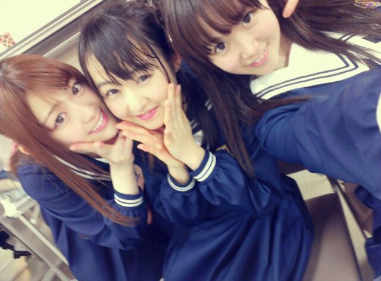
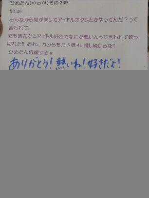
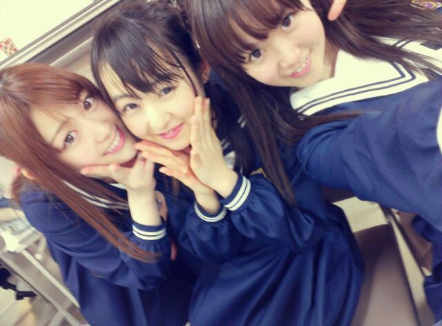
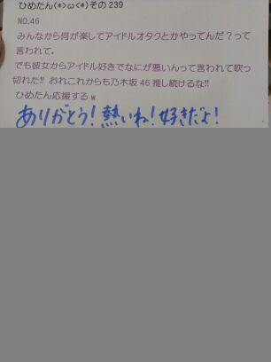

ライブ直後のびしょびしょ
なかいさんりんご(ω)

ひめたん大図鑑とは何か。
それは、ひめたんが受験とかテストとか
テストとかテストでちょーっと日記書く時間がないぞーって時に登場する、
いわゆる「過去の質問返しをまとめたもの」って感じかな。
過去なので時制とかおかしなことになる質問も中にはあるかもだけど、
ま、そゆことなんでね(*^^*)
854 買い物は乃木メンは原宿か渋谷が多いみたいだけど、
買い物は乃木メンは原宿か渋谷が多いみたいだけど、
ひめたんはどのあたりに遊びに行く事が多いのかな?
そうだねー。
今までメンバーと一緒に遊んだのはやっぱり渋谷とか多いかな。
ひとりだったら駅地下とかアトレとか散策するだけで満足(ω)☆
あんまりにぎやかな所いくと「あらひとりじゃん...」て寂しくなってくるからね。
855英語とか地歴みたいな文系の教科は得意なの!?高校の宿題は終わってる?
文系はまあまあできる。国語なんか得意(^^)!
国語はひめたんに聞いてくださいませ。
高校の宿題...。
まだもらってないんよね。怖い怖いっ。
856ひめたんの地元大先輩って誰ですか?やっぱりパフュームさん?
僕は奥田民生さんが大好きです!知ってるかしら?
やっぱりPerfumeさん(*/ω＼*)
奥田民生さんもちろん知ってますよ。
携帯で「おくだ」って打った「奥田民生」さん出てきた!
8573日間かけてひめたんブログをその1から全部読んだので、
そろそろ中元日芽香推しを名乗っていあでしょうか...(>_<)??
お疲れさまでした!
ぜひぜひ名乗ってくださいな(^^)
因みに、ひめたんにきゅんってした人のことひめきゅんさんって呼んでんの。
恥じらいなんて捨てましょ?
858ひめたんの得意料理教えてくださーいo(^o^)o
得意料理とか言う前にそもそもお料理が苦手なのだけれども←
お好み焼きとかなら作れる...。
859ひめかサンプラーの使い方教えてもらっていいかな?
860ひめかサンプラーってなんですか?
握手会で話すネタがないときに使ってくださいな(*^ω^*)
ひめたんの好きなものを想像して、コールしてください。
あなた......あ
ひめたん...ひ
あ「ひめたんサンプラー!○○○!」
ひ「好き!」
あ「●●●!」
ひ「嫌い!」
こういった感じ。
861ひめたんて呼ぶの恥ずかしいわ笑どしたらいいかね?笑
頑張って呼んでひめきゅんでしょっ(o>ω<o)♪わら
どうしても無理なら...おまかせしますよ?
862握手会の時ってファンレターとかプレゼントとかって渡せるんですか?
...というか渡して良いのですか?
全然渡して良いのですよ!
ひめたんお手紙大好きだよ♪
ありがとうございます(∀)
863俺は基本MDの上に単推しの他メンバーがいるけれど、
そんな俺に「ひめきゅん」を名乗る資格があるでしょうか?
ひめたんにきゅんってした人はもれなくひめきゅんさんになります
(*・ω・*)!
864春といえばどんな服着る??男の子がどんな服着ればいいか?でもいいよw
865男性のファッションではどんな感じが好きですか?(≧∀≦)
866ひめたんが好きな男子の髪型・ファッションは?
ファッションきたあ。
自分が着るなら淡い色の...いわゆるゆるゆる流行りのシャーベットカラーとかね☆
男の子ならなんだろね。
似合ってれば何でも良って人だからねえー(ω)
うん。お出かけするのに乃木ジャー着てようとも、
似合ってるなら、それで...。
867最近、ひめたんはなんか幸せな出来事はあった?あったら教えて!
地元の友達が毎日2・3人ずつくらい連絡してくれるんです!
嬉しいよね(*^ω^*)♪
本当に素敵なお友達に恵まれたなあって思いますっ
868広島にいるときラジオって聴いてた?
もし聞いてたら好きだった番組も教えて
ラジオはあんま聴いたことない(\'・ω・`)
車の中で流れるのを耳にするくらいかなっ
何か楽しい番組あるんですか??教えてー☆
869広島で買い物する場所とか食べにいくならここって場所教えてほしいな(*'∀`*)
んー本通りとか、ソレイユとか、ゆめタとかかな(∀)
市電でふらふらお出かけしてみて下さい♪
870しつもーんワサビは入れるのかな?
ひめたん勝手に前説省っちゃったけど、これお寿司の話ねっ
ワサビなんて辛くて食べられません!
鼻はつーんとするし目はうるうるするし...
('・ω・`)
871ひめたんは、アニメ見るの?見てるとしたらなにかオススメのアニメあるかな?(笑)
ひめたんこの頃アニメ見てないの...
ちっちゃい時は「とっとこハム太郎」とか「東京ミュウミュウ」とか好きだった(*^^*)
小6の頃は毎週「絶チル」も見てたかな。
872しつもーんあしゅりんといる時も妹キャラ?w流石におねえちゃん?w
あしゅ(齋藤飛鳥chan)といるときは対等?同い年?みたいになる!
あしゅはたまに年上ぶってきたりもします。
「ひめたんちっちゃい子みたーい(^^)」って。
え?あしゅには言われたくないよ?13歳でしょ?
...と言いつつひめたんも変な時冷静だからね。
高校生のみなさんとも話があうしね♪
873ひめたんは看護師を目指す男子ってどう思う?(∩∇`)
素敵っ☆
夢に向かって頑張る人かっこいいよお(//ω//)
頑張ってください!!

(＊´・ω・＊)
なかいさんりんご(ω)

ひめたん大図鑑とは何か。
それは、ひめたんが受験とかテストとか
テストとかテストでちょーっと日記書く時間がないぞーって時に登場する、
いわゆる「過去の質問返しをまとめたもの」って感じかな。
過去なので時制とかおかしなことになる質問も中にはあるかもだけど、
ま、そゆことなんでね(*^^*)
854
買い物は乃木メンは原宿か渋谷が多いみたいだけど、ひめたんはどのあたりに遊びに行く事が多いのかな?
そうだねー。
今までメンバーと一緒に遊んだのはやっぱり渋谷とか多いかな。
ひとりだったら駅地下とかアトレとか散策するだけで満足(ω)☆
あんまりにぎやかな所いくと「あらひとりじゃん...」て寂しくなってくるからね。
855
英語とか地歴みたいな文系の教科は得意なの!?高校の宿題は終わってる?文系はまあまあできる。国語なんか得意(^^)!
国語はひめたんに聞いてくださいませ。
高校の宿題...。
まだもらってないんよね。怖い怖いっ。
856
ひめたんの地元大先輩って誰ですか?やっぱりパフュームさん?僕は奥田民生さんが大好きです!知ってるかしら?
やっぱりPerfumeさん(*/ω＼*)
奥田民生さんもちろん知ってますよ。
携帯で「おくだ」って打った「奥田民生」さん出てきた!
857
3日間かけてひめたんブログをその1から全部読んだので、そろそろ中元日芽香推しを名乗っていあでしょうか...(>_<)??
お疲れさまでした!
ぜひぜひ名乗ってくださいな(^^)
因みに、ひめたんにきゅんってした人のことひめきゅんさんって呼んでんの。
恥じらいなんて捨てましょ?
858
ひめたんの得意料理教えてくださーいo(^o^)o得意料理とか言う前にそもそもお料理が苦手なのだけれども←
お好み焼きとかなら作れる...。
859
ひめかサンプラーの使い方教えてもらっていいかな?860
ひめかサンプラーってなんですか?握手会で話すネタがないときに使ってくださいな(*^ω^*)
ひめたんの好きなものを想像して、コールしてください。
あなた......あ
ひめたん...ひ
あ「ひめたんサンプラー!○○○!」
ひ「好き!」
あ「●●●!」
ひ「嫌い!」
こういった感じ。
861
ひめたんて呼ぶの恥ずかしいわ笑どしたらいいかね?笑頑張って呼んでひめきゅんでしょっ(o>ω<o)♪わら
どうしても無理なら...おまかせしますよ?
862
握手会の時ってファンレターとかプレゼントとかって渡せるんですか?...というか渡して良いのですか?
全然渡して良いのですよ!
ひめたんお手紙大好きだよ♪
ありがとうございます(∀)
863
俺は基本MDの上に単推しの他メンバーがいるけれど、そんな俺に「ひめきゅん」を名乗る資格があるでしょうか?
ひめたんにきゅんってした人はもれなくひめきゅんさんになります
(*・ω・*)!
864
春といえばどんな服着る??男の子がどんな服着ればいいか?でもいいよw865
男性のファッションではどんな感じが好きですか?(≧∀≦)866
ひめたんが好きな男子の髪型・ファッションは?ファッションきたあ。
自分が着るなら淡い色の...いわゆるゆるゆる流行りのシャーベットカラーとかね☆
男の子ならなんだろね。
似合ってれば何でも良って人だからねえー(ω)
うん。お出かけするのに乃木ジャー着てようとも、
似合ってるなら、それで...。
867
最近、ひめたんはなんか幸せな出来事はあった?あったら教えて!地元の友達が毎日2・3人ずつくらい連絡してくれるんです!
嬉しいよね(*^ω^*)♪
本当に素敵なお友達に恵まれたなあって思いますっ
868
広島にいるときラジオって聴いてた?もし聞いてたら好きだった番組も教えて
ラジオはあんま聴いたことない(\'・ω・`)
車の中で流れるのを耳にするくらいかなっ
何か楽しい番組あるんですか??教えてー☆
869
広島で買い物する場所とか食べにいくならここって場所教えてほしいな(*'∀`*)んー本通りとか、ソレイユとか、ゆめタとかかな(∀)
市電でふらふらお出かけしてみて下さい♪
870
しつもーんワサビは入れるのかな?ひめたん勝手に前説省っちゃったけど、これお寿司の話ねっ
ワサビなんて辛くて食べられません!
鼻はつーんとするし目はうるうるするし...
('・ω・`)
871
ひめたんは、アニメ見るの?見てるとしたらなにかオススメのアニメあるかな?(笑)ひめたんこの頃アニメ見てないの...
ちっちゃい時は「とっとこハム太郎」とか「東京ミュウミュウ」とか好きだった(*^^*)
小6の頃は毎週「絶チル」も見てたかな。
872
しつもーんあしゅりんといる時も妹キャラ?w流石におねえちゃん?wあしゅ(齋藤飛鳥chan)といるときは対等?同い年?みたいになる!
あしゅはたまに年上ぶってきたりもします。
「ひめたんちっちゃい子みたーい(^^)」って。
え?あしゅには言われたくないよ?13歳でしょ?
...と言いつつひめたんも変な時冷静だからね。
高校生のみなさんとも話があうしね♪
873
ひめたんは看護師を目指す男子ってどう思う?(∩∇`)素敵っ☆
夢に向かって頑張る人かっこいいよお(//ω//)
頑張ってください!!

(＊´・ω・＊)
 広島ラブのひめたんがカキもダメなんてことはないですよね?
広島ラブのひめたんがカキもダメなんてことはないですよね? 握手会のとき投げキスしてくれますか?
握手会のとき投げキスしてくれますか?